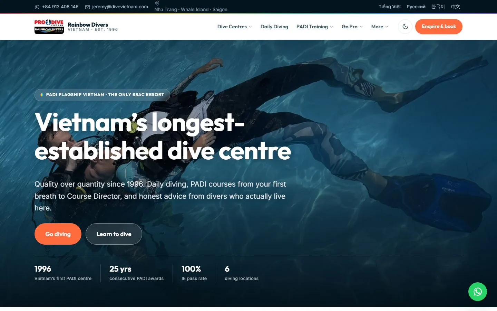

Rainbow Divers Vietnam Live preview
divevietnam.com · PADI flagship, Nha Trang · est. 1996
Six dive centres, the full PADI ladder from Discover Scuba to Master Instructor, conservation and group packages. 35 finished pages in 4 languages, 123 photos taken from the current site, sitemap and robots written by the generator.
35 pages4 languages123 photos$0/month hosting